01
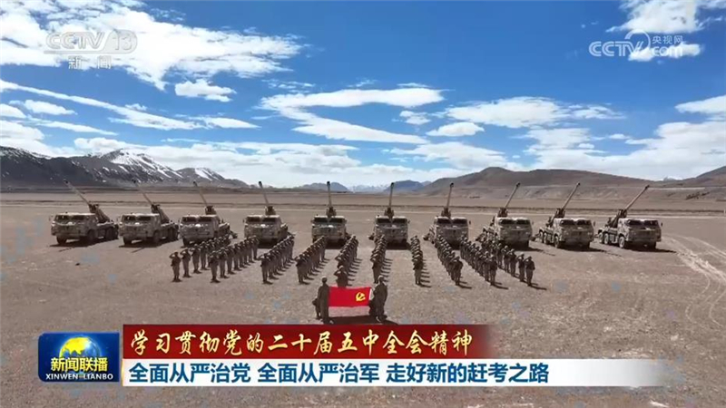
【学习贯彻党的二十届五中全会精神】全面从严治党 全面从严治军 走好新的赶考之路
党的二十届五中全会深刻总结了新时代全面从严治党的伟大成就和宝贵经验，对于巩固党的执政地位、实现党的使命任务意义重大。全军官兵认真学习贯彻全会精神，一致表示，要更加紧密地团结在以习近平同志为核心的党中央周围，持续推进全面从严治党、全面从严治军，毫不动摇坚持和加强党对军队的绝对领导，在新的赶考之路上交出新的更加优异的答卷。


党的二十届五中全会深刻总结了新时代全面从严治党的伟大成就和宝贵经验，对于巩固党的执政地位、实现党的使命任务意义重大。全军官兵认真学习贯彻全会精神，一致表示，要更加紧密地团结在以习近平同志为核心的党中央周围，持续推进全面从严治党、全面从严治军，毫不动摇坚持和加强党对军队的绝对领导，在新的赶考之路上交出新的更加优异的答卷。
明天（11月5日）出版的《人民日报》将发表评论员文章，题目是《历史昭示未来，奋斗成就伟业——论学习贯彻党的二十届五中全会精神》。
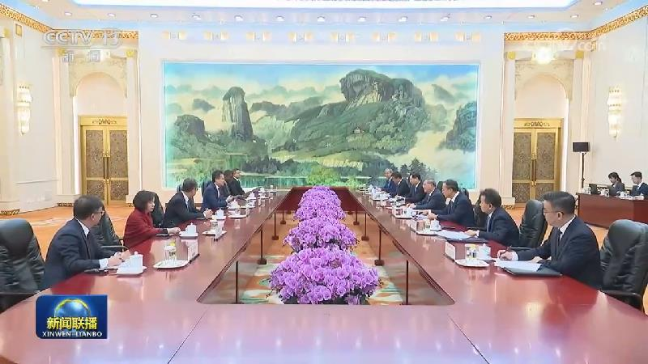
国务院总理李强4日在京会见世界知识产权组织总干事邓鸿森。李强表示，近年来，中国和世界知识产权组织开展了富有成效的合作。当前，世界经济增长乏力，知识产权的价值愈发凸显。中方愿同世界知识产权组织一道，推动双方合作不断走深走实，促进知识产权国际合作，为世界创新发展作出更大贡献。中方愿在全球知识产权治理中发挥更大作用，建设性参与全球知识产权服务体系现代化改革进程，开展面向全球南方国家的能力建设合作。……
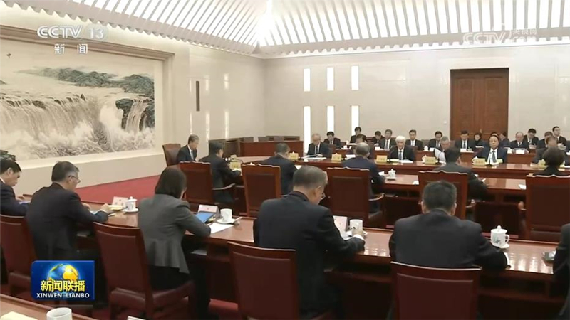
十四届全国人大常委会第七十五次委员长会议4日下午在北京人民大会堂举行。赵乐际委员长主持。
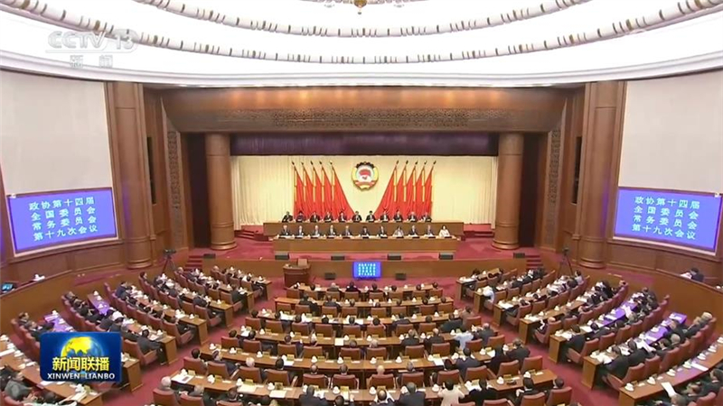
政协第十四届全国委员会常务委员会第十九次会议4日下午在京闭幕。中共中央政治局常委、全国政协主席王沪宁主持闭幕会并讲话。他表示，中共二十届五中全会研究持之以恒推进全面从严治党问题，是以习近平同志为核心的中共中央把握党和国家事业发展历史方位、着眼中国式现代化全局作出的重大决策。……
国家主席习近平特别代表、国家副主席韩正将应邀于11月6日至12日赴土耳其出席《联合国气候变化框架公约》第三十一次缔约方大会安塔利亚领导人峰会，并访问格鲁吉亚。
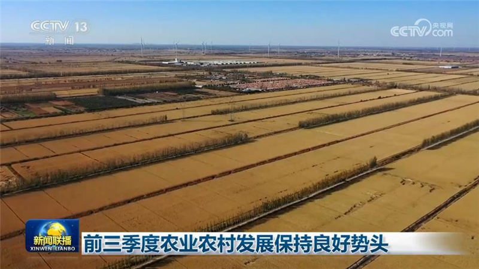
记者今天（11月4日）从农业农村部了解到，前三季度，我国农业农村发展保持良好势头，为国民经济延续总体平稳、向新向优态势提供有力支撑。
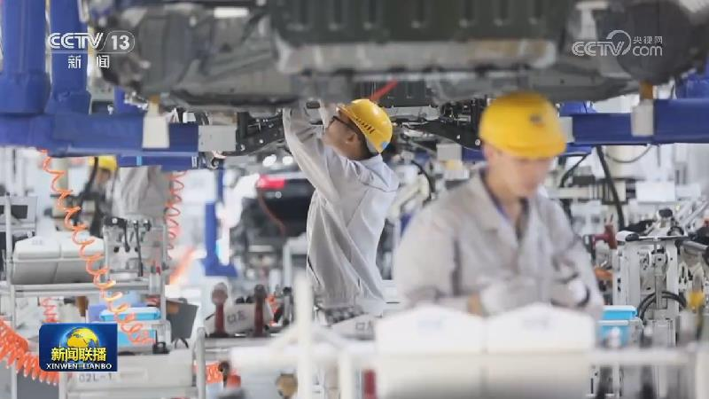
中国物流与采购联合会发布，10月份中国物流业景气指数为51.2%，保持扩张。其中，七个分项指数处于扩张区间。需求方面，新订单指数为51.5%，环比回升0.3个百分点，区域分化明显，中、西部回升，东部回落。
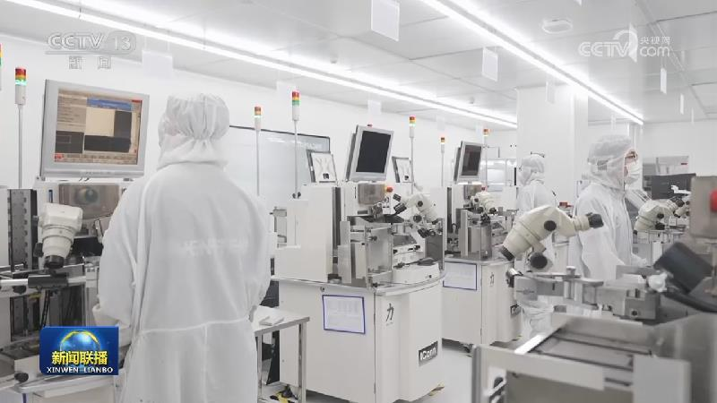
为维护资本市场平稳运行，中国人民银行加力实施股票回购增持再贷款政策。自今天（11月4日）起，下调股票回购增持再贷款利率0.25个百分点至1%。股票回购增持再贷款的支持对象为21家全国性银行和5家系统重要性城商行，支持比例为100%，期限1年。银行可在再贷款利率基础上适当加点，合理确定股票回购增持贷款期限和利率，加快贷款投放，增强上市公司、主要股东市值管理能力。
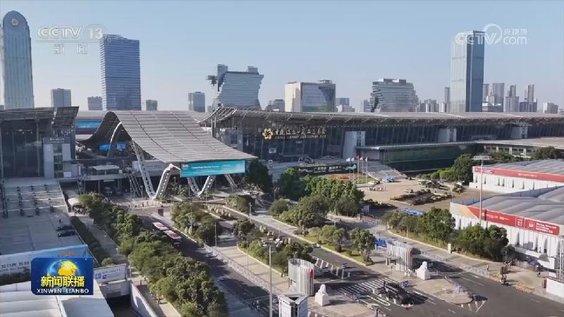
第140届广交会今天（11月4日）在广州闭幕，其间累计吸引了来自全球219个国家和地区的35.2万名境外采购商到会，较上届增长12.2%，到会人数创下历史新高。
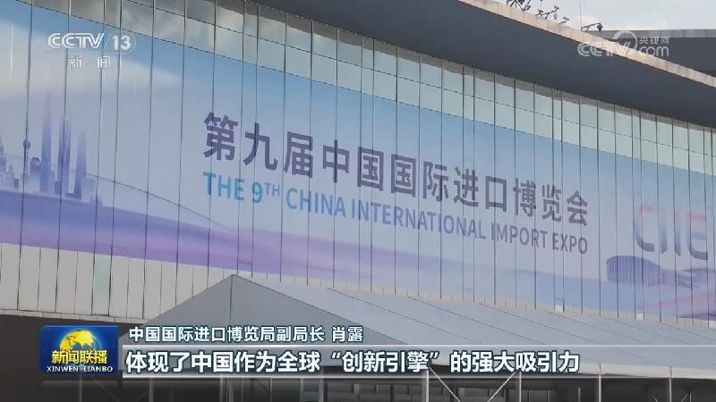
第九届中国国际进口博览会将于明天（11月5日）在上海开幕。目前，各项筹备工作已全部就绪。
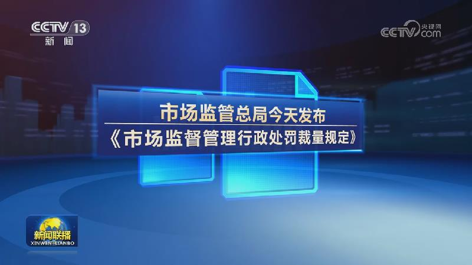
2026年世界互联网大会蓝皮书今天发布
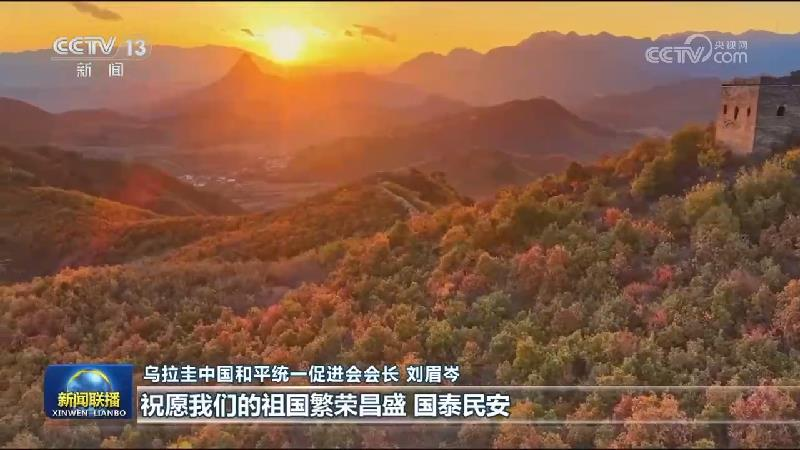
海外华侨华人表示，中国共产党二十届五中全会对持之以恒推进全面从严治党作出系统部署，凝聚力量，让海外中华儿女对祖国的发展充满信心。
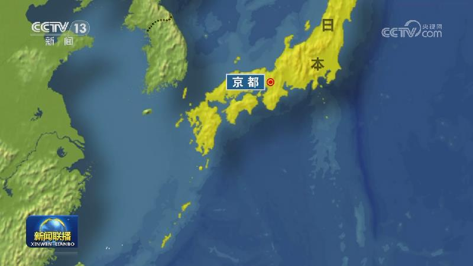
11月3日是日本战后宪法正式公布80周年的日子，大批日本民众在东京的日本国会附近举行集会，呼吁守护和平，坚决反对高市政权修宪和扩军的企图。
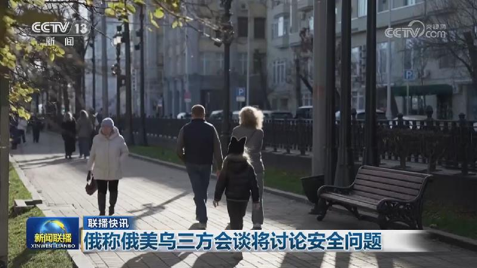
美国中期选举投票结束